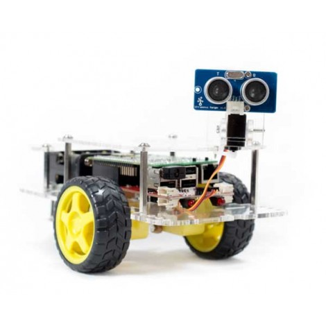
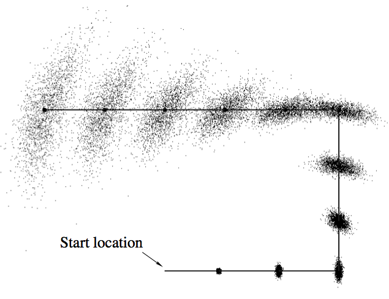
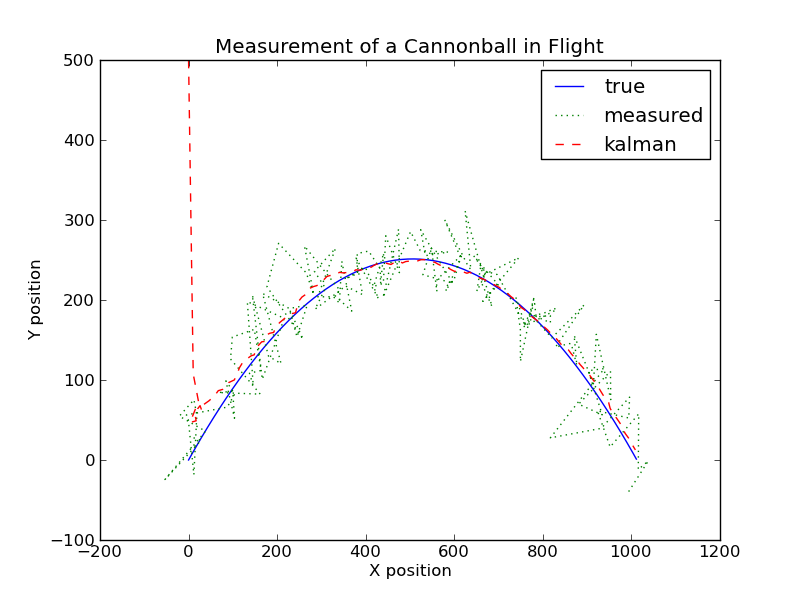
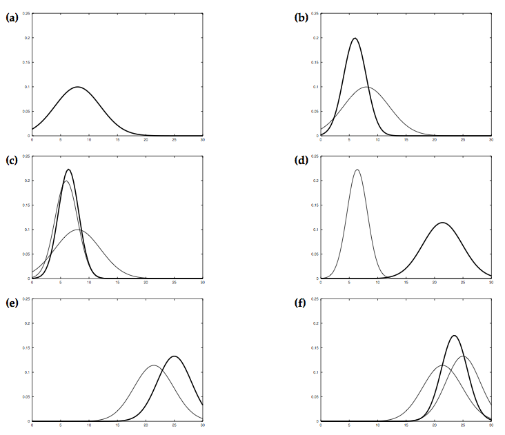
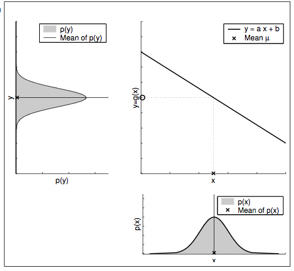
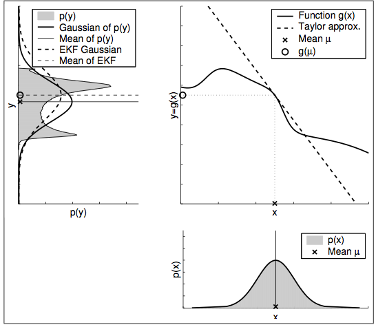
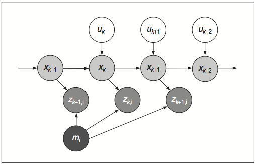
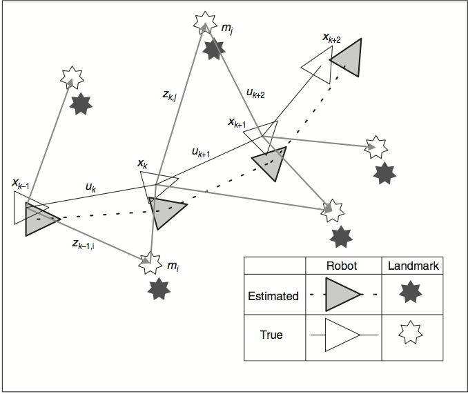
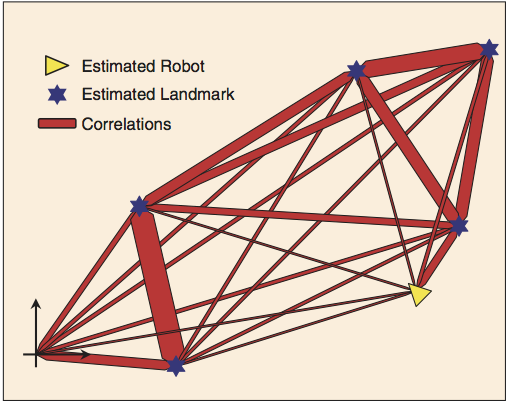

Abstract
This is an implementation of Extended Kalman Filter (EKF) Simultaneous Localization and Mapping (SLAM ) using a Raspberry Pi based GoPiGo robot that is sold by Dexter Industries in kit form. The robot has two powered wheels and a third castor wheel. It is equipped with an ultrasonic range finder that is mounted on a servo mechanism that allows for the range finder to be pointed in any direction in front of the robot. An EKF SLAM implementation consists of two steps - prediction and updation. The prediction step has been implemented successfully. However, the updation step has not been fully implemented due to problems with the ultrasonic sensor as described below in the implementation details.
Problem Description
Robot motion is stochastic and not deterministic. A robot does not faithfully execute movement commands due to inaccuracies in its motion mechanism, approximations made in modeling its environment and incomplete modeling of the physics of its operating environment. Due to these reasons, the robot may not end up exactly at the location where it should have been if the movement command had been faithfully executed. The robot position may be thought of as a two dimensional probability distribution. This probability distribution will have a mean that will be equal to the expected robot location based on the movement command. The covariance will be the measure of how faithfully it executes commands. Due to this uncertainty in movement, with each motion command, the location uncertainty increases and after a while the robot gets lost.
|  |
In the above diagram, before the robot starts moving, it knows exactly where it is. So it's location belief is a single point. After each movement, its location uncertainty increases. This is shown by the location probability distribution that changes from a point to a larger area with each step. In the final position of the robot, the uncertainty is the largest as it accumulates the added uncertainty with each step.
In some applications, robots need to be able to go into an unknown environment and explore it. This is a difficult problem due to the issue described above. If a map of the environment is available, the robot can use sensors to find its location in the environment. Conversely, if the robot knows where it is, it can generate an environment map. This is a sort of chicken and end problem. Simultaneous Localization and Mapping (SLAM) solves this problem. An Extended Kalman Filter (EKF) can be used to reduce robot location uncertainty. This page describes the implementation of EKF SLAM using a robot. The EKF SLAM implementation enables the robot to keep track of its location within an environment and also create a map of the environment as it is moving.
What is a Kalman Filter
As it moves through an environment, the robot uses the knowledge of its own movement and sensing uncertainties in conjunction with an EKF to reduce its location uncertainty.
|  |
|  |
The above figure illustrates the Kalman filter for a simplistic one-dimensional localization scenario. Suppose the robot moves in the horizontal axis in each diagram with the prior over the robot localization given by the normal distribution shown in 1a. The robot queries its sensors on its location and these return a measurement that is centered at the peak of the bold Gaussian distribution in 1b. The peak corresponds to the value returned by the sensors and the its width or variance corresponds to the uncertainty in measurement. Combining the prior with the measurement yields the bold Gaussian in 1c. The belief’s mean lies between the two original means, and its uncertainty width is smaller than both contributing Gaussians. The is the result of the information gain from using the Kalman filter. Now lets assume that the robot moves towards the right. Its uncertainty grows due to the fact that the state transition is stochastic. This results in the the Gaussian shown in bold in 1d. This Gaussian is shifted by the amount the robot moved and is also wider because of the uncertainty introduced by the movement. The robot does a second sensor measurement shown in 1e, which results in the posterior shown in 1f.
|  |
Shown above in the bottom-right part is a prior Gaussian probability distribution for a robot location and the posterior distribution on the upper-left part after it is acted on by a linear transformation. The posterior distribution is also Gaussian. In such cases a Kalman filter can be used for reducing uncertainty.
|  |
Shown above in the bottom-right part is a prior Gaussian probability distribution for a robot location and the shaded posterior distribution on the upper-left part after it is acted on by a non-linear transformation. The posterior distribution is not Gaussian. In such cases a Kalman filter cannot be used for reducing uncertainty. An extended Kalman filter can be employed by making use of a tangent to the non-linear function. The resulting Gaussian distribution is shown by the dotted line.
EKF SLAM Algorithm Details
|  |
A graphical model of the SLAM algorithm is shown above. The robot pose (X coordinate, Y coordinate and robor orientation) is depicted by the circles containing the x with subscript. The circles with u and a subscript stand for the motion command at the location. The cicle with m stands for a landmark and the circles with z and subscript stand for sensor measurements of the landmarks taken at the robot pose that it is attached to.
|  |
The figure above shows a robot moving through an environment, taking measurements of landmarks. As the robot does this, the estimates of the landmarks are all correlated with each other because of the common error in estimate robot location.
|  |
The uncertainty reduction process can be visualized as shown above as a network of springs connecting all landmarks together or as a rubber sheet in which all landmarks are embedded. An observation in a neighborhood acts like a displacement to a spring system or rubber sheet such that its effect is great in the neighborhood and, dependent on local stiffness (correlation) properties, diminishes with distance to other landmarks. As the robot moves through this environment and takes observations of the landmarks, the springs become increasingly (and monotonically) stiffer. In the limit, a rigid map of landmarks or an accurate relative map of the environment is obtained. As the map is built, the location accuracy of the robot measured relative to the map is bounded only by the quality of the map and relative measurement sensor. In the theoretical limit, robot relative location accuracy becomes equal to the localization accuracy achievable with a given map.
Implementation Details
Here are the implementation details.
Project Demo
GoPiGi Obstacles Navigation from Gopal Menon on Vimeo.
References
[1] GoPiGo - Dexter Industries. Dexter Industries. N.p., n.d. Web. 06 Nov. 2015. http://www.dexterindustries.com/gopigo/.
[2] Durrant-Whyte, H., and T. Bailey, Simultaneous Localization and Map- ping: Part I, IEEE Robotics and Automation Magazine. 13.2 (2006): 99-110.
[3] Bailey, Tim, and Hugh Durrant-Whyte, Simultaneous localization and mapping (SLAM): Part II, IEEE Robotics and Automation Magazine. 13.3 (2006): 108-117.
[4] Thrun, Sebastian, Wolfram Burgard, and Dieter Fox, Probabilistic Robotics, MIT press, 2005.
[5] Stachniss, Cyrill, SLAM Course - WS13/14, YouTube. YouTube, n.d. Web. 18 Sept. 2015. https://www.youtube.com/playlist?list= PLgnQpQtFTOGQrZ4O5QzbIHgl3b1JHimN_.